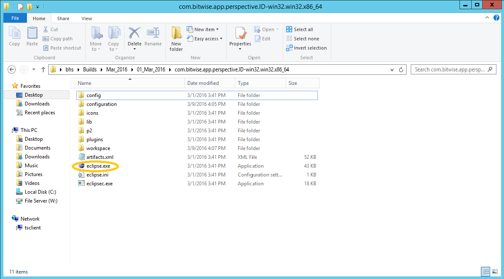
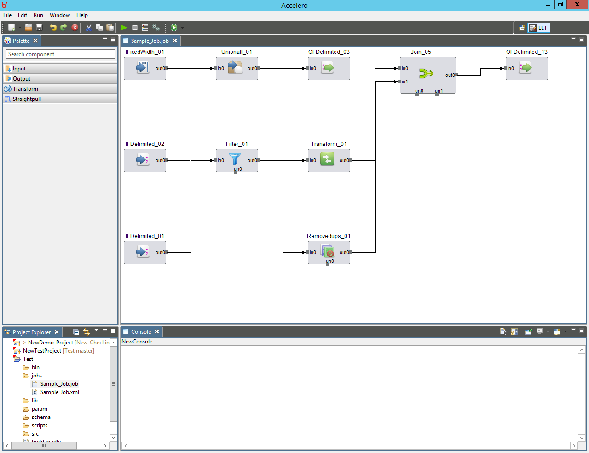

Accelero Help
Accelero Help
Launching Accelero on Windows
Accelero Release Version 1.0
Download the appropriate Accelero build from shared location. The downloaded folder will have directory structure like below:

Double click on eclipse.exe, Accelero will get launched.
